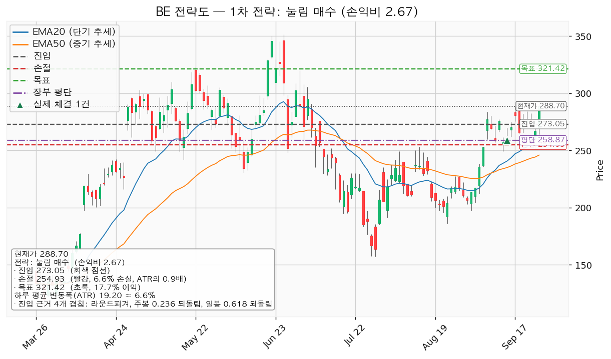
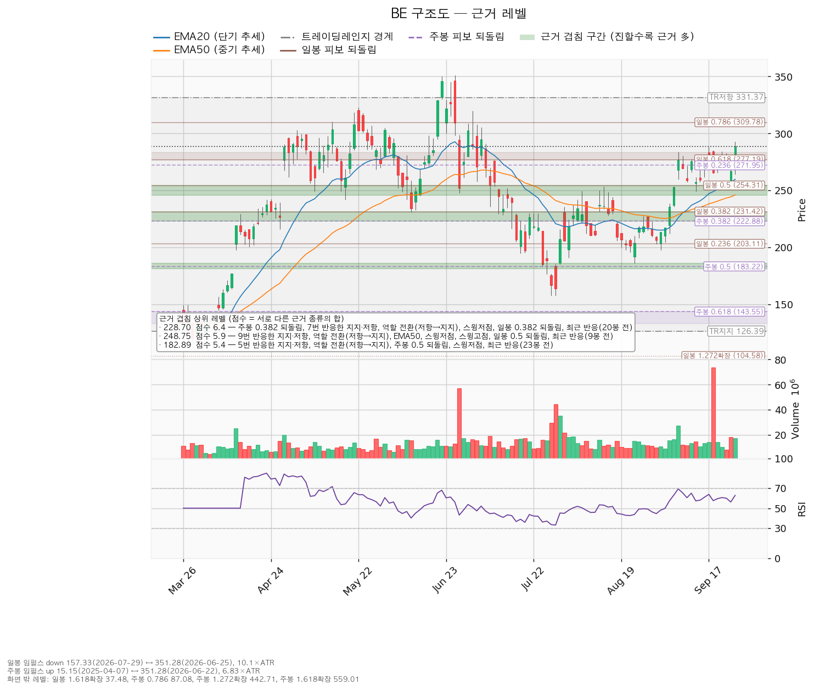
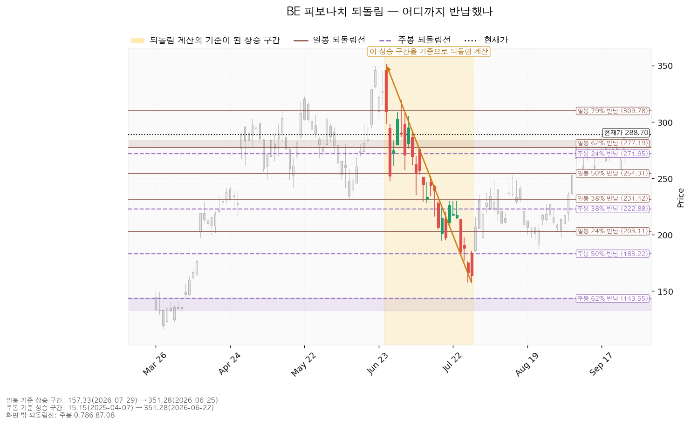
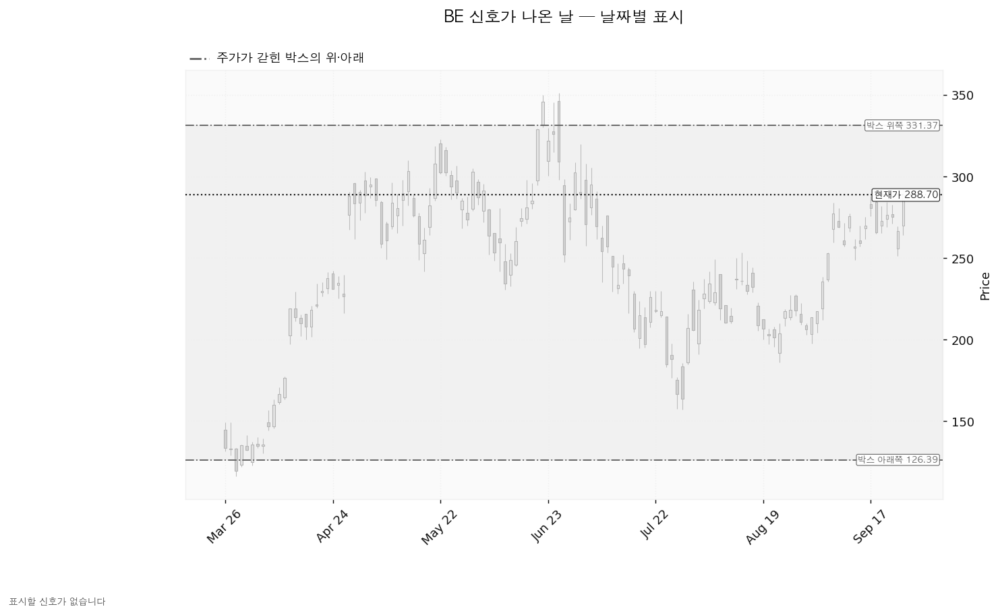

블룸에너지(BE)는 천연가스·수소로 전기를 만드는 고체산화물 연료전지 발전 장비를 제조하는 미국 기업으로, 데이터센터·공장·상업시설에 현장 설치형 전원을 공급합니다.
기준 종가는 2026-09-25의 288.70달러입니다(직전 리포트 기준가 280.76달러 대비 +2.83%). 앞을 보고 판정할 가격은 진입 273달러 · 손절 255달러 · 목표 321달러 셋뿐이고, 위쪽 참고선은 박스 상단 331달러(+14.78%)입니다.
| 구분 | 가격 | 판정 방식 | 현재 상태 | 현재가 대비 |
|---|---|---|---|---|
| 진입 조건 (눌림 매수) | 273달러 | 장중 저가로 닿으면 분할 매수 | 대기 | -5.42% |
| 집행 손절 | 255달러 | 장중 저가로 닿으면 전량 매도 (손절) — 1주 보유 중이라 지금 작동합니다 | 작동 중 | -11.70% |
| 관망 종료 기준 | 2026-10-28 실적 | 그때까지 273달러에 닿지 않으면 매수 계획 종료 — 새 리포트 대기 (보유분은 그대로) | 가격선 없이 날짜로만 겁니다 | — |
| 확인선 249달러 / 회복선 229달러 | 249·229달러 | 일봉 종가 돌파·회복 후 되돌림 지지 | 둘 다 이미 충족 — 앞으로 판정할 값이 아닙니다 | -13.84% / -20.78% |
| 폐기선 (구조) | 126달러 | 이탈 후 3거래일 내 종가 회복 실패(또는 그 전에 107달러 아래 종가 마감) + 반등에서 저항 확인 | 유지 중 — 하루 변동폭의 8.45배 거리로 실무상 작동하지 않습니다 | -56.22% |
① 성적표 — 회복선 충족, 관망 종료 기준은 두 번 이탈 후 회복. 직전이 건 회복선 286.92달러는 09-25 종가 288.70으로 충족됐습니다(그 전 최고 종가는 09-23의 275.19). 관망 종료 기준 270.25달러는 09-18 종가 265.63과 09-24 종가 266.65로 두 번 이탈했으나 각각 다음 거래일 종가(09-21 272.89, 09-25 288.70)로 회복해 무효화 2단계로 넘어가지 않았습니다. 집행 손절 241.95(이후 최저가 251.30)·목표 299.62(이후 최고가 292.72)·경고선 251.38·폐기선 179.29는 모두 미충족입니다. 보유 1주는 어느 쪽에도 닿지 않았고 평가손익은 +11.52%(+29.83달러)입니다.
② 좌표의 이동 — 박스 창이 바뀌어 구조선 셋이 통째로 내려갔습니다. 엔진이 고른 횡보 박스 창이 90봉에서 180봉으로 바뀌었습니다(가격이 경계 안에 머문 비율 180봉 0.983 > 90봉 0.967). 박스가 179.29~331.37에서 126.39~331.37로 넓어지면서 폐기선은 179.29 → 126달러, 회복선은 286.92 → 229달러, 확인선은 299.62 → 249달러로 내려갔습니다. 대표 셋업은 돌파 매수(진입 286.92, 손익비 1:0.59)에서 눌림 매수(진입 273달러, 1:2.67)로, 집행 손절은 241.95 → 255달러, 목표는 299.62 → 321달러로 바뀌었습니다. 하루 평균 변동폭 18.87 → 19.20달러, RSI(14) 63.82 → 62.80입니다.
③ 판단의 변화 — 패스에서 매수 대기로 바뀌었습니다. 09-18에는 진입 286.92가 현재가 280.76 바로 위이고 목표가 299.62여서 이익 폭이 하루 변동폭의 0.67배뿐이었는데, 이번에는 진입이 현재가 아래 273달러로 내려가고 목표가 321달러여서 2.52배가 됩니다. 박스 안쪽 판정도 매집 우위에서 중립으로 바뀌었는데, 새로 파는 쪽이 늘어서가 아니라 판정 창이 180봉으로 바뀌며 지지 테스트가 올해 1~3월의 116~131달러 구간 세 번으로 교체됐기 때문입니다. 직전 리포트에서 정정할 오류는 없습니다.
| 항목 | 눌림 매수 — 대표 셋업 |
|---|---|
| 엣지 / 구조 증명도 | 평균회귀 (지지로 눌릴 때 산다 — 승률이 높고 이익 폭이 작은 유형, 저항에서 전량 매도가 정합적) / 선취형(구조 미확인), 가중치 0.7 — 구조가 증명되기 전에 먼저 잡아 진입가는 유리하나 실패 확률이 높습니다 |
| 진입 / 손절 / 목표 | 273달러 / 255달러 / 321달러 |
| 진입 근거 겹침 | 근거 4개 — 라운드피겨 270, 주봉 0.236 되돌림, 일봉 0.618 되돌림, 13봉 전 반응. 구간 270.00~277.19 |
| 손절·목표 근거 | 손절은 겹침 구간(259.73~260.00 — EMA20 + 라운드피겨 260) 바로 아래, 구간 안쪽이 아니라 그 밑입니다. 목표는 라운드피겨 320 + 스윙고점 322.83(2026-05-22)이 겹친 320.00~322.83 |
| 손익비 | 1 : 2.67 (손절 폭 0.94 ATR) — 손실 폭 18.12달러, 이익 폭 48.37달러(2.52 ATR) |
| 청산 | 321달러에서 전량 매도 (목표 도달), 단일 목표·트레일링 없음 |
대표로 고른 이유: 손익비 2.67 × 구조 증명도(선취형) × 근거 겹침 4개로 선정했고 지수 대비 20일 초과수익 +32.37% 때문에 순위에 1.1배가 곱해졌습니다. 다른 후보인 돌파 매수는 손익비 1:0.22로 비매력·보류입니다. 분할하지 않는 이유: 엔진이 낸 분할안(284.44에서 절반)을 쓰면 전 구간 손익비가 1:2.67에서 1:1.65로, 첫 절반 이후 하한은 1:0.32로 내려갑니다. 평단과의 관계: 계획 진입 273달러는 평단 258.87달러보다 +5.48% 위이므로, 평단을 낮추는 매수가 아니라 값이 오른 자리에서 더 사는 추가 매수입니다.

| 단계 | 트리거 | 의미 | 행동 |
|---|---|---|---|
| ① 관찰 | 일봉 종가가 273달러 아래로 마감 | 구조 이탈 시작 — 되돌아 올라오면 속임수 하락일 수 있어 아직 무효가 아닙니다 | 신규 진입만 중단. 집행 손절은 그대로 둡니다 |
| ② 경고 | 이탈 후 3거래일 안에 273달러를 종가로 회복하지 못함, 또는 그 전에 일봉 종가가 253.85달러 아래로 마감(하루 평균 변동폭의 1배만큼 더 밀림) — 둘 중 먼저 오는 쪽 | 되돌림 지지 상실 가능성이 우세해집니다 | 보유 비중 축소. 반등이 나오면 이 가격에서의 반응을 확인합니다 |
| ③ 무효 | 반등이 273달러에서 막히고 그 아래로 되밀림(지지가 저항으로 전환) | 셋업 폐기 — 구조 해석이 틀린 것으로 확정 | 전량 매도 후 새 구조가 만들어질 때까지 관망 |
집행 손절 255달러는 이 판정과 무관하게 따로 작동하며, 장중에 잠깐 273달러를 내준 것은 어느 단계에도 해당하지 않습니다. 논지 무효화: 폐기선 126달러가 하루 변동폭의 8.45배 아래라 쓸 수 없으므로, 10월 28일 실적에서 아래 중 하나가 확인되면 가격과 무관하게 이 판단을 접습니다 — ① 올해 주당순이익 컨센서스가 현재 범위 하단 2.42달러 아래로 내려가는 경우 ② 내년 컨센서스가 90일 전 값인 4.36달러 아래로 되돌아가는 경우 ③ 영업활동 현금흐름이 적자로 전환하는 경우.
| 시나리오 | 조건 | 구조 해석 | 행동 |
|---|---|---|---|
| 상승 전환 | 273달러 눌림에서 지지 후 321달러 종가 돌파 | 되돌림 지지 확인 → 상승 국면 연장 | 273달러에서 분할 매수, 321달러에서 전량 매도 (목표 도달). 그 위는 이 포지션의 연장이 아니라 새 셋업으로 다시 산출합니다 |
| 횡보 지속 | 126달러를 지키며 321달러 아래 박스 유지 | 구조는 유지되는 국면입니다. 매물 소화에 시간이 필요할 뿐 부정적 신호가 아닙니다 | 보유 1주만 유지하며 추적합니다 — ① 지지 테스트 때 매도 거래량이 줄어드는지(현재: 증가) ② 박스 안 저점이 절상되는지(현재: 평탄) ③ 상승할 때 거래량·캔들 폭이 확대되는지(현재: 상승봉 대 하락봉 거래량비 0.90) |
| 시나리오 폐기 | 126달러 이탈 후 3거래일 내 회복 실패(또는 그 전에 107달러 아래 종가 마감) + 반등에서 저항 확인 | 박스 안에서 있었던 일이 사 모으기가 아니라 물량 넘기기였다는 뜻이며, 추가 저점 갱신 가능성을 엽니다 | 전량 매도 (시나리오 폐기) 후 새 매도 절정과 새 박스가 만들어질 때까지 관망 |
| 가격대 | 겹친 근거 | 현재가 대비 |
|---|---|---|
| 245.60 ~ 254.31 | 9회 반응한 선반, 저항에서 지지로 바뀐 자리, EMA50, 스윙저점, 일봉 0.5 되돌림, 9봉 전 반응 — 집행 손절이 이 구간 바로 위 | -14.93% ~ -11.91% |
| 270.00 ~ 277.19 | 라운드피겨 270, 주봉 0.236 되돌림, 일봉 0.618 되돌림, 13봉 전 반응 — 진입 구간 | -6.48% ~ -3.99% |
| 320.00 ~ 322.83 | 라운드피겨 320, 스윙고점 322.83 — 목표 | +10.84% ~ +11.82% |
박스 안쪽 — 중립: 753봉을 조회해 40·90·180봉 세 창을 시험했고 180봉이 채택됐습니다(경계 안에 머문 비율 0.983, 40봉 창은 유효 판정을 받지 못했습니다). 아홉 달 정도의 횡보입니다. 지지 테스트는 3회였는데(2026-01-08 저가 116.16, 거래량 평균의 1.00배 → 02-13 131.00, 0.66배 → 03-30 116.505, 1.26배) 테스트 때 매도 거래량이 줄지 않고 늘었고, 박스 안 저점은 평탄하며, 상승봉 대 하락봉 거래량비는 0.90입니다. 셋 다 사 모으는 쪽을 가리키지 않아 중립입니다. 직전 180봉 구간은 17.06~140.48달러였고 가격은 그 위로 뚫고 올라와 지금 박스로 들어왔습니다 — 아래에서 올라온 자리라 다시 사 모으는 구간일 수도, 위에서 물량을 넘기는 구간일 수도 있습니다.

되돌림: 일봉·주봉 모두 계산됐습니다. 일봉은 351.28(2026-06-25) → 157.33(2026-07-29) 하락 구간 기준으로 0.618이 277.19, 0.786이 309.78이고 현재가 288.70은 그 사이 — 하락분의 62~79%를 되돌린 상태입니다. 주봉은 15.15(2025-04-07) → 351.28(2026-06-22) 상승 구간에서 0.236이 271.95이고 현재가는 그 위 — 상승분의 24% 미만을 반납한 상태입니다. 진입 273달러는 이 둘이 겹치는 자리입니다.

날짜별 신호: 엔진이 표시할 신호일은 없습니다 — 속임수 하락·강세 신호·약세 신호 어느 것도 조건을 채우지 못했고 직전 리포트와 같습니다. 국면 후보는 상승 진행이며 그 근거는 신호일이 아니라 EMA 정배열과 200일선 위 유지입니다. 아래 차트가 회색으로만 보이는 것은 그 때문입니다.

(a) 배수: 후행 주가수익비율(PER) 384.93배, 선행 PER 58.58배입니다. 후행 주당순이익 0.75달러에 대해 올해 예상치는 2.71달러(+256.0%), 내년은 4.93달러(+82.2%)입니다. 두 배수가 6배 넘게 벌어진 것은 이익이 급증하는 구간이기 때문이며, 후행 배수만으로는 비싸다·싸다를 판정할 수 없습니다.
(b) 목표주가 분포: 애널리스트 26명, 투자의견 매수. 평균 280.24달러, 최저 97.00달러, 최고 390.00달러입니다. 현재가 288.70달러는 평균보다 +3.02% 위이고 최저 목표보다는 위에 있습니다. 분포가 네 배로 벌어져 있어 평균값은 서로 다른 전망의 중간점입니다.
(c) 하락의 성격: 6월 25일 고점 351.28달러에서 현재가는 -17.81%입니다. 같은 90일간 컨센서스 주당순이익은 올해분 2.14 → 2.71달러(+26.5%), 내년분 4.36 → 4.93달러(+13.0%)로 상향됐으므로 고점 대비 하락은 배수 수축이며 사업 악화로 읽을 근거는 없습니다. 최근 30일은 올해분 -0.2%로 멈췄고 내년분만 +0.9%입니다 — 상향의 대부분이 90일 전에서 30일 전 사이에 났고 최근 한 달은 거의 멈춰 있습니다. 기다릴 실적 이벤트는 10월 28일 하나이며 그 전에 값이 붙을 별도의 재평가 계기는 찾지 못했습니다 — 대기 기간을 수 주로 잡는 근거가 그만큼 약합니다.
(d) 현금흐름: 2025-12-31 결산 기준 영업활동 현금흐름 +1억 1,395만 달러, 잉여현금흐름 +5,719만 달러, 설비투자 5,676만 달러(전년 대비 -3.6%)입니다. 세 수치가 서로 맞아떨어지고 적자가 아니므로 적자의 성격을 가를 항목이 없습니다.
(e) 상승 여력의 분해: 목표 321달러를 내년 예상 주당순이익 4.93달러로 나누면 내재 배수 65.2배로 현재 선행 배수 58.58배에서 +11.3% 확장입니다. 컨센서스 평균 280.24달러의 내재 배수는 56.9배로 현재 배수보다 낮습니다. 이 리포트의 목표는 이익 증가가 아니라 배수 확장에 기댄 값이며, 셋업 시계는 수 주이고 컨센서스는 12개월이라 같은 층위가 아닙니다.
날짜가 있는 확인 이벤트는 2026-10-28 분기 실적 하나입니다. 볼 수치는 올해 주당순이익 컨센서스 2.71달러(범위 2.42~3.08)를 향한 경로, 영업활동 현금흐름의 부호, 설비투자 증감, 내년 가이던스입니다. 그 이후 2~3개 분기에 이미 알려진 역풍은 확인할 자료가 없습니다. 10월 28일이 이 계획의 시한이며 그때까지 273달러에도 321달러에도 닿지 않으면 실적을 보고 다시 짭니다.
1회 매매 손실 한도는 계좌 139,498,400원의 1%인 1,394,984원입니다. 손절 폭 6.64%로 역산하면 계좌의 15.1%가 나오는데 한 종목 상한 13%를 넘으므로 13%인 18,134,792원(환율 1,355.28 기준 13,381달러 · 273달러에서 약 49주)으로 제한합니다. 이 비중에서 손절까지 밀리면 실제 손실은 1,204,150원(계좌의 0.86%)입니다. 도구 적합성으로 보면 하루 평균 변동폭이 주가의 6.65%로 8% 기준 아래이고 손절 폭은 0.94배이므로, 논지와 무관한 이유로 체결될 만큼 좁은 손절은 아닙니다.
최종 판정: 조건 점검은 7/9 통과이고 미달은 상대강도선 신고가와 거래량 강도 둘입니다 — 되돌림 구간인데 5일 평균 거래량이 20일 평균의 0.82배로 0.7배 아래까지 줄지 않아 파는 쪽이 남아 있고, 지수 대비 비율이 60일 신고가를 내지 못했습니다. 손익비 1:2.67로 계획은 성립하므로 273달러 눌림을 기다려 계좌의 13%까지 분할 매수하고, 보유 1주는 같은 손절 255달러·같은 목표 321달러로 끌고 갑니다.
회복선 229달러와 확인선 249달러는 현재가 아래로 내려가 이미 충족된 값입니다. 앞으로의 판정에 쓸 수 없어 이번 기준 가격 등록에서 두 값을 뺐습니다 — 등록하면 매일 조건이 충족된 것으로 잡혀 없는 신호가 나갑니다. 등록한 것은 진입 273.05 · 손절 254.93 · 목표 321.42 · 폐기선 126.39입니다.
ATR: 하루 평균 변동폭. EMA20·EMA50: 20일·50일 지수이동평균으로 각각 단기·중기 흐름선. RSI(14): 과열·침체 정도를 재는 지표로 50이 중립. PER: 주가수익비율. 선반: 가격이 여러 번 반응한 수평 가격대.